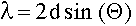
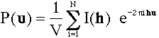

Structure solving: Answers part I

Structure solution
Tasks part 1
Answers part 1
Tasks part 2
Answers part 2
Tasks part 3
Answers part 3
Goto
Contents
Why are the two diffraction patterns different?
- The left image was calculated for X-ray diffraction. Note that the intensities drop with increasing distance from the center of reciprocal space.
- The right image was calculated for neutron diffraction. Atoms can be treated like point scatterers in this case. Accordingly the intensities do not decrease with increasing distance from the origin of reciprocal space.
- The atomic form factors increase with the number of electrons, while the neutron scattering length do not show this systematic distribution. Accordingly the same reflection can have totally different intensity as can be seen in the diffraction patterns.
What information can you extract from the diffraction patterns?
- By applying Bragg's law you can calculate the d-spacing for the
reflections.
 There are many different ways to get the lattice constants from a list of d-spacings. Since the diffraction pattern in these examples are undistorted representations of reciprocal space, the lattice constants can be obtained directly from the patterns. The two base vectors of reciprocal space are normal to each other, of equal length. Base vector a is horizontal, base vector b is vertical. The lattice constants are: a=b=5.0 A, alpha=90. - The second information available directly from the diffraction pattern is their symmetry. Both diffraction patterns show symmetry mm4. There are no systematic extinctions, thus the plane group is pmm4. Note that the X-ray pattern shows a pseudo c-centering. All reflections hk, h+k=2n+1 are very weak.
What, if any, information do you need beyond the diffraction patterns to solve the crystal structure?
- First we need the chemistry of the substance: Zr Ti O4
- In order to calculate the number of molecules per unit we should measure the density of the material.
- Physical properties such as the piezoelectric effect will give insight into the presence of a center of symmetry.
What type of calculations can you perform to solve the structure?
- Direct methods provide the most powerful and usually easiest way to solve the structure. They are, however, very much black box methods, and beyond the scope of this tutorial.
- A Patterson synthesis can be calculated directly from the
intensities:

Now you are ready for the next step towards a solution of the given structure.